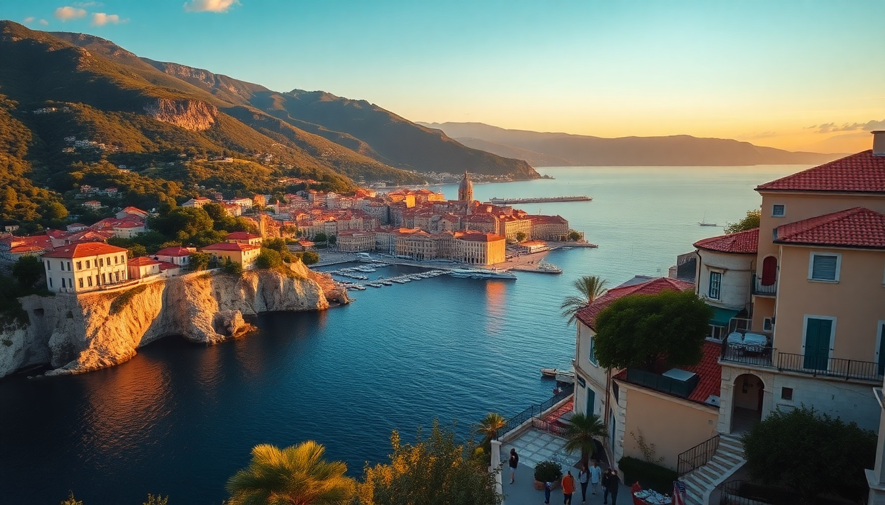

7-Day Croatia Itinerary: Dubrovnik, Split & Plitvice

I landed in Dubrovnik with a backpack and a vague plan to hit Split and Plitvice in a week. No ferry bookings, no hotel confirmations—just a rough idea and a willingness to adjust. Seven days later, I’d eaten my weight in black risotto, hiked past waterfalls that looked photoshopped, and learned the hard way that the catamaran schedule is not your friend. Here’s the exact route I’d take again, with the stops I’d keep and the ones I’d skip.
How do I get from Dubrovnik to Split to Plitvice in 7 days?
The key is the catamaran between Dubrovnik and Split. I took the Jadrolinija ferry from Dubrovnik’s Gruž Harbor—it runs daily in summer and takes about 4.5 hours. Book a seat online a day ahead; walk-ups sometimes get stuck standing. From Split, I rented a car at Sixt near the port for the drive to Plitvice (about 2.5 hours). Alternatively, FlixBus runs a direct line from Split to Plitvice for around €20, but you lose flexibility for stops along the way.
I split the nights: 3 in Dubrovnik, 2 in Split, 1 near Plitvice. You could flip it, but starting in Dubrovnik felt right—it’s the most tourist-heavy, so getting it out of the way early works.
Is Dubrovnik worth the hype?
Honestly, it’s crowded. I walked the City Walls at 8 AM (opens at 8, get there before 8:30) and still had to dodge selfie sticks. The view over the terracotta roofs and the Adriatic is legit—but the €35 entry fee stings. Skip the cable car (€27 for a 4-minute ride) and instead hike Mount Srđ from the back of the old town. It’s steep, takes about 45 minutes, and ends at the same panoramic spot.
For food, I ducked into Konoba Dalmatino on a side street off the Stradun. The black risotto with cuttlefish ink was the best meal I had in Croatia—earthy, briny, and not a tourist trap. Avoid restaurants with waiters waving menus at you on the main drag. For a quieter swim, Banje Beach is fine but packed; I preferred Sveti Jakov Beach, a 20-minute walk south of the old town with fewer crowds and better rocks for lounging.
What should I do in Split in 2 days?
Split is more laid-back than Dubrovnik. I spent the first morning wandering Diocletian’s Palace—it’s not a single building but a maze of alleys, squares, and Roman ruins. The Peristyle courtyard is the centerpiece, and the basement halls are worth the €10 entry just to escape the heat. Grab a coffee at Kavana 4coffee on the waterfront; the cappuccino is average, but the people-watching is top-tier.
For lunch, I hit Konoba Fetivi near the Riva promenade. The grilled squid and Swiss chard were simple and perfect. On day two, I took a ferry to Hvar Island for a half-day trip—the Jadrolinija catamaran runs hourly in summer and takes 1 hour. Hvar town is polished and expensive (€15 cocktails), but the fortress hike gives killer views over the Pakleni Islands. If I had more time, I’d skip Hvar and do a day trip to Krka National Park instead—the waterfalls are closer and less crowded than Plitvice.
How much time do I need at Plitvice Lakes?
One full day is enough. I arrived at Plitvice Lakes National Park at 7:30 AM (it opens at 7 in summer) and did Route C, which covers the lower and upper lakes in about 5 hours. The lower lakes have the iconic boardwalks over turquoise pools—go early to beat the tour buses that roll in around 10 AM. The upper lakes are quieter, with wooden paths through forest and smaller cascades.
I stayed at Hotel Jezero inside the park—convenient but basic, with dated rooms and a buffet breakfast that felt like a school cafeteria. For better value, book House Tina in the nearby village of Rakovica (10 minutes by car). The hosts make homemade rakija and will drive you to the park entrance. Pack water and snacks; the park’s food stalls charge €8 for a sad sandwich.
Should I rent a car or use public transport?
I rented a car from Split to Plitvice and back—it gave me freedom to stop at Šibenik for an hour to see the St. James Cathedral (UNESCO-listed, free to walk around) and grab burek from a bakery near the train station. Parking at Plitvice costs €10 per day, and the lot fills by 9 AM. If you’re not comfortable driving Croatian roads (narrow, winding, with aggressive local drivers), FlixBus is reliable but less flexible. The bus from Split to Plitvice drops you at the park’s entrance, and you can store luggage at the main info center for about €5.
What are the best places to stay in each city?
In Dubrovnik, I stayed at Hotel Excelsior—it’s outside the old town (a 10-minute walk along the coast), but the sea-view rooms are worth the splurge. The breakfast terrace overlooks the harbor, and the staff helped me book a last-minute ferry ticket. Budget alternative: Hostel Angelina near the Pile Gate, with clean dorms and a rooftop bar.
In Split, I booked Hotel Vestibul Palace inside Diocletian’s Palace. It’s a converted Roman house with exposed stone walls and a tiny courtyard. The rooms are small, but the location is unbeatable—steps from the Peristyle. For cheaper, Mosaic Apartments on the Riva offers studio units with kitchenettes and a shared balcony.
Near Plitvice, House Tina in Rakovica was my pick. The hosts, a retired couple, serve a homemade breakfast with eggs from their chickens, and the garden has a fire pit for evening chats with other travelers.
Is 7 days enough for this route?
Yes, but it’s tight. I felt rushed in Dubrovnik (wished for one more day to explore the islands) and exhausted on the travel days. If I had an extra day, I’d add a night in Zadar between Split and Plitvice—the Sea Organ sunset is genuinely stunning, and the Roman forum is less crowded than Diocletian’s. As is, the itinerary works if you pack light, book ferries in advance, and accept that you’ll spend about 10 hours total on buses or boats.
FAQ
What is the best time of year for this itinerary? May, June, or September. July and August are sweltering (35°C in Dubrovnik) and packed with cruise ship crowds. I went in mid-September—the water was still warm for swimming, and Plitvice had fewer tour buses. Avoid winter; many ferries stop running, and Plitvice’s boardwalks can be icy.
Do I need to book Plitvice tickets in advance? Yes. The park caps daily visitors, and tickets sell out days ahead in summer. I booked through the official website—entrance for Route C was €40 for adults. Print the ticket or save the PDF; the gate scanners don’t always read phone screens in direct sunlight.
Can I do this trip without a car? Yes, with planning. I used FlixBus for the Split-to-Plitvice leg and the Jadrolinija catamaran for Dubrovnik-to-Split. The downside: you’ll need to pack light (no room for bulky souvenirs) and accept that bus schedules might force you into a later arrival at Plitvice. I’d still recommend a car for the flexibility to stop at Šibenik or grab lunch at a roadside konoba.
Conclusion
- Start in Dubrovnik, end in Split—or vice versa—and use the catamaran to connect them.
- Spend 3 nights in Dubrovnik, 2 in Split, and 1 near Plitvice to avoid burnout.
- Book Plitvice tickets and ferry seats online at least 2 days ahead.
- Skip the cable car in Dubrovnik; hike Mount Srđ instead.
- Rent a car for the Split-to-Plitvice drive if you want to stop at Šibenik or Krka.